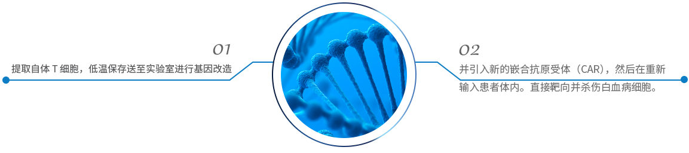
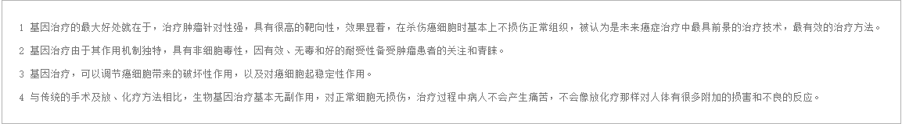

完整疗愈健康管理中心
通过生物电，生物共振，能量学，心理等方法，综合对客人进行细胞层面的保养，尤其是线粒体ATP层面上的保养。
根据美国国家癌症研究所的数据，美国每年会有约 3100 名 20 岁以下的年轻患者被诊断患有急性淋巴细胞白血病，而这已经成为了青少年人群中最常见的癌症疾病。虽然目前有诸如化疗和干细胞治疗等医治手段，但每年仍会有约 600 例癌症复发的病例，甚至许多患者根本就无法被完全治愈。
革命性癌症疗法 CAR-T 疗法 Kymriah 已终于获得了美国食品及药品监督管理局（FDA）的审批 。主要用来治疗儿童和青年所患的白血病和骨癌。通过重新编辑患者自身细胞来对抗致命的癌细胞，医疗创新的全新领域已被打开。这是一种使用患者自身免疫细胞——T 细胞的定制疗法。患者的T细胞被提取出来并被低温冷冻，然后被送往位于美国新泽西州的诺华制药实验室。在那里，会对 T 细胞进行基因改造，并引入新的嵌合抗原受体（CAR），然后在重新输入患者体内。改造过的T细胞表面将携带一种特殊抗原，从而具备能直接靶向并杀伤白血病细胞的能力。这是一种使用患者自身免疫细胞——T 细胞的定制疗法。患者的T细胞被提取出来并被低温冷冻，然后被送往位于美国新泽西州的诺华制药实验室。在那里，会对 T 细胞进行基因改造，并引入新的嵌合抗原受体（CAR），然后在重新输入患者体内。改造过的T细胞表面将携带一种特殊抗原，从而具备能直接靶向并杀伤白血病细胞的能力。
适应问题
治疗原理
治疗流程
治疗优势
